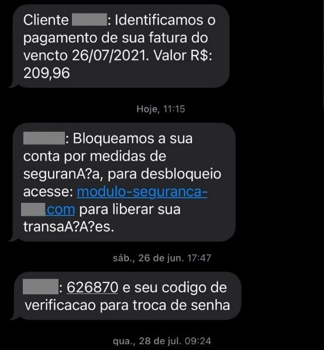

Como denunciar crimes online?
Denunciar um crime virtual é importante para combater fraudes, golpes e outros abusos digitais. Veja abaixo como fazer sua denúncia de forma simples e segura:
1️. Reúna as provas
Tire prints de mensagens, e-mails, perfis falsos ou conversas. Anote datas, horários e nomes de usuários. Guarde tudo, sem alterar as evidências.
2️. Faça o boletim de ocorrência
Você pode registrar o boletim online através da Delegacia Virtual do seu estado ou pessoalmente em uma delegacia especializada em crimes cibernéticos.
3️. Denuncie em sites oficiais
Use canais como:
- Portal do Ministério da Justiça
- SaferNet Brasil – denúncias anônimas de crimes online
- Polícia Federal
4️. Bloqueie e reporte o agressor
Em redes sociais, use as opções de “denunciar” e “bloquear” o perfil. Isso impede novas tentativas de contato.

5️. Busque apoio
Se o crime envolveu ameaças ou constrangimento, procure ajuda psicológica ou jurídica. Existem ONGs e canais gratuitos que prestam esse suporte.